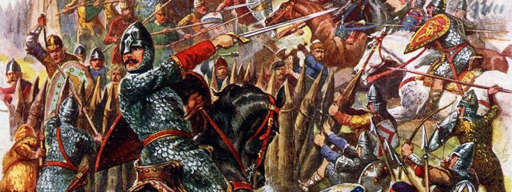

<!DOCTYPE html>
<html>
<head>
  <link rel="icon" type="image/x-icon" href="faviconnn.ico">
</head>
</html>
<html lang="id">
<head>
  <meta charset="UTF-8">
  <title>Norman Conquest</title>
  <link rel="stylesheet" href="style.css">
</head>
<body>
  <header>
    <h1>The Norman Conquest</h1>
    
    <nav>
      <a href="index.html">Beranda</a>
      <a href="tentang.html">Tentang</a>
      <a href="kronologi.html">Timeline</a>
      <a href="dampak.html">Dampak</a>
      <a href="quiz.html">Quiz</a>
    </nav>
  </header>

  <main>
    
    <p class=imgSub><em>© Illustration Look and Learn / Bridgeman Images</em></p>
    <section>
      <h2>Selamat Datang di Website Sejarah Norman Conquest!</h2>
      <p>
        Website ini dibuat sebagai media pembelajaran interaktif yang membahas secara lengkap mengenai <strong>Norman Conquest</strong>, sebuah peristiwa penting dalam sejarah Inggris yang terjadi pada tahun <strong>1066</strong>. Peristiwa ini bukan hanya perang memperebutkan takhta, tetapi juga menjadi titik balik besar dalam perkembangan sosial, budaya, dan bahasa Inggris.
      </p>
      <strong>Preferences:</strong>
      <li><a href=https://www.britannica.com>Britannica</a></li>
      <li><a href=https://www.historic-uk.com>HISTORIC UK</li>
      <li><a href=https://www.bbc.com>bbc</li>
    </section>
      </ul>
    </section>
  </main>

  <footer>
    <p>&copy; 2025 | Proyek Kelompok SPBI - Daniel, Figo & Haura ©️</p>
  </footer>
</body>
</html>

